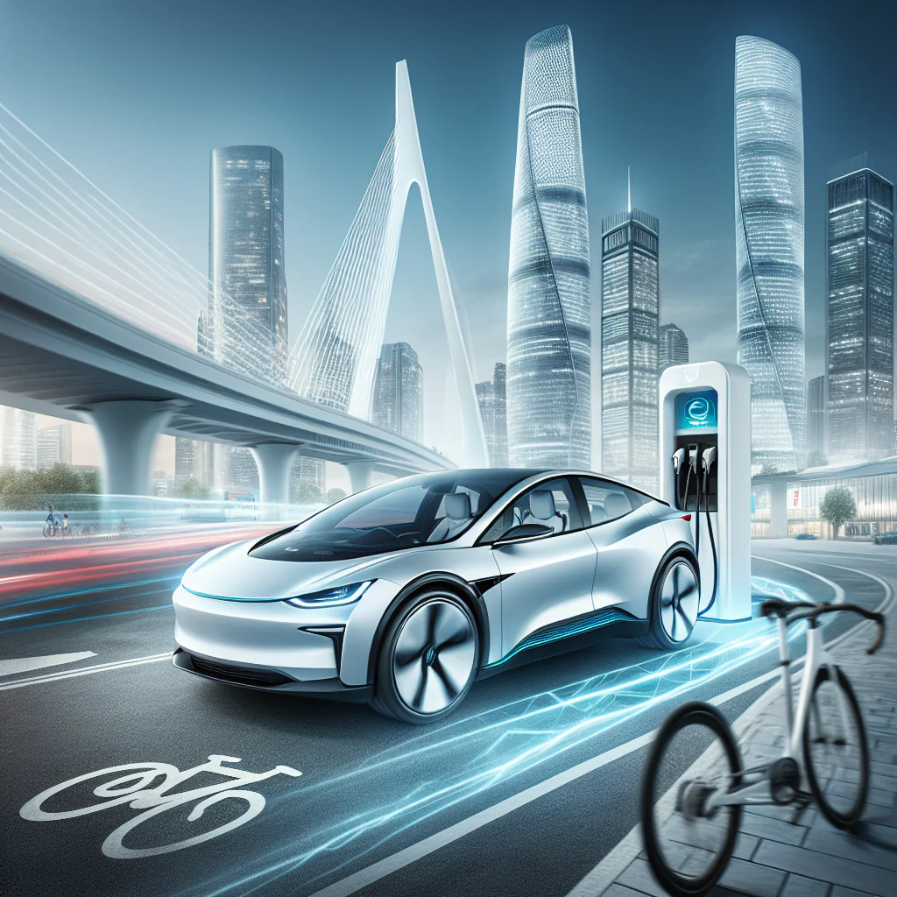

Lanzamiento del Nuevo BMW Serie 5
BMW ha anunciado el lanzamiento de su renovado modelo Serie 5, con:
- Mejoras en rendimiento, incluyendo motores más potentes, menor consumo de combustible y una aceleración optimizada para una experiencia de conducción más dinámica.
- Tecnología de conducción autónoma. La tecnología de conducción autónoma de BMW incluye: Asistentes de conducción, control de crucero adaptativo, asistencia en el aparcamiento, reconocimiento de señales de tráfico, detección de peatones y ciclistas.
- Conectividad avanzada. Integración de sistemas de infoentretenimiento y conectividad con smartphones.
- Diseño más aerodinámico. El nuevo Serie 5 incorpora líneas exteriores optimizadas, mejoras en la gestión del flujo de aire y materiales ligeros que reducen la resistencia, contribuyendo a una mayor eficiencia y estabilidad en carretera.
El nuevo BMW Serie 5 estará disponible en concesionarios a partir de junio de 2025. Los interesados pueden realizar reservas anticipadas a través del sitio web oficial de BMW.
Para más detalles, visita el sitio oficial de BMW.
Avances en Movilidad Eléctrica
BMW continúa liderando en el sector de vehículos eléctricos con innovaciones en su tecnología de baterías, asegurando una mayor autonomía y eficiencia. BMW ha desarrollado: baterías de alta capacidad, diseños aerodinámicos, sistemas de carga rápida. Además, la marca apuesta por la integración de tecnologías inteligentes que optimizan el consumo energético y mejoran la experiencia de usuario. Los nuevos modelos eléctricos de BMW ofrecen tiempos de carga reducidos, mayor seguridad y conectividad avanzada, posicionando a la compañía como referente en movilidad sostenible a nivel mundial.
Lee más sobre estos avances en BMW electric.